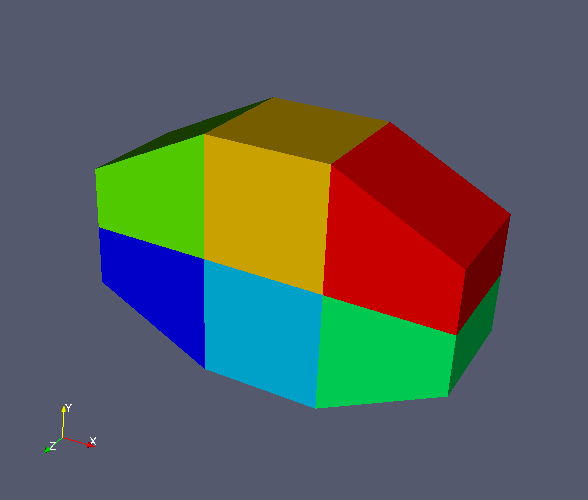
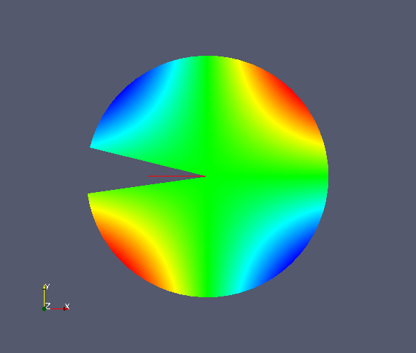
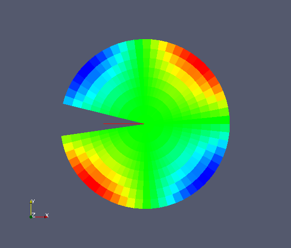
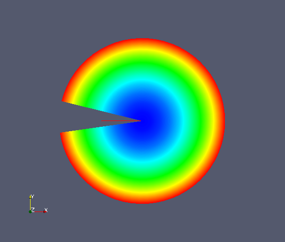
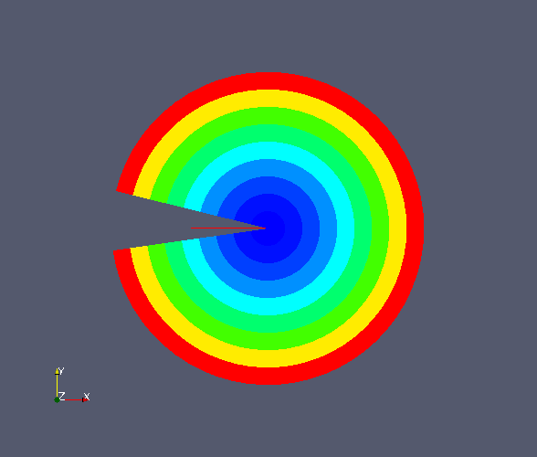
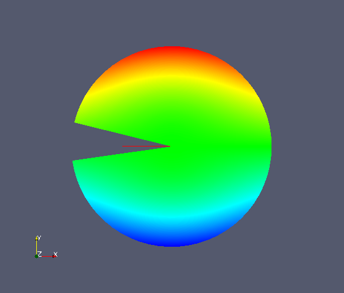
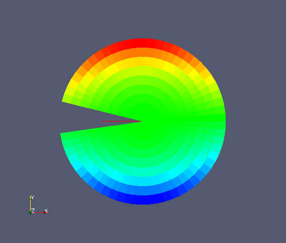

pcolor()
function.Ondrej Certik (ondrej@certik.cz)
Visit developers
See the README file.
Using the following code:
you get:
python demo3.py
paraview --data=vwcurv3d.vtk

And using the following code (it uses a pcolor(), which works
similar to matplotlib's pcolor(), only it produces a vtk file, see also the
source code of the demo6.py file, it's very simple):
you get all of the images below (depending on what variable you visualize in
paraview):






python demo6.py
paraview --data=pcolor.vtk
New BSD license.
You can download this project in either zip or tar formats.
You can also clone the project with Git by running:
$ git clone git://github.com/certik/visit_writer